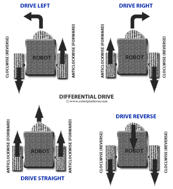
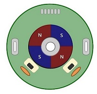
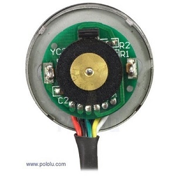
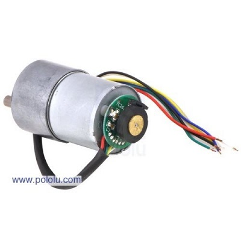
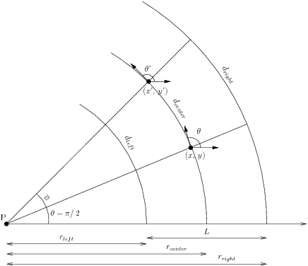

Odométrie : mesurer les déplacements du robot en comptant les tours des roues
L’odométrie est une méthode pour connaitre la position et l’orientation de son robot.
Notre robot est constitué de deux roues motorisées indépendantes. Pour faire avancer le robot tout droit, il faut faire tourner les deux roues à la même vitesse. Pour faire
tourner le robot, il faut faire tourner une roue plus vite que l’autre.

Comment ça marche
En comptant le nombre de tour effectués par chacune des deux roues, on peut connaître la distance parcourue par le robot ainsi que son angle de rotation.
Pour mesurer le nombre de tours effectués par les roues, nous utilisons un codeur.
Point techno: le codeur
Un codeur est un compteur de tours. Il en existe plusieurs types. Celui que nous utilisons est un codeur à effet hall. Il est constitué d’un aimant circulaire qui tourne
face à un capteur de magnétisme. Lorsque l’aimant tourne, le capteur détecte le changement de pôle sud et de pôle nord de l’aiment.



Notre codeur est constitué d’un aiment rotatif fixé sur le moteur ayant quatre pôles nord et quatre pôles sud. Il compte donc huit graduations pour un tour de moteur. De plus,
le moteur est suivi d’un réducteur. Ce sont des engrenages qui diminuent la vitesse mais augmentent le couple de la roue par rapport au moteur. Pour 1 tour de roue, le moteur
fait 100 tours. Donc à chaque tour de roue, le codeur compte 800 graduations.
Nous avons donc un codeur pour la roue droite et un codeur pour la roue gauche. Lorsque le robot tourne, chaque roue décrit un arc de cercle différent. La roue droite parcours
un arc d’une distance D(droite), la roue gauche parcours un arc d’une distance D(gauche) et le centre du robot parcourt un arc d’une longueur D(centre).

Nous pouvons calculer ces longueurs grâce aux formules suivantes :
D : la longueur de l’arc de cercle parcouru
d : le diamètre de la roue
pas : le nombre de graduation du codeur pour un tour de roues (le pas du codeur). Le codeur que nous allons utiliser dans nos exemples aura un pas de 800.
Compteur : le nombre de graduations comptées par le codeur

Maintenant que nous avons la longueur de ces trois arcs de cercle, nous pouvons calculer l’angle duquel le robot a tourné.
θ_initial : angle de rotation du robot initial
θ : nouvel angle de rotation du robot après son déplacement
L : longueur entre les roues du robot

Cependant, il faut prendre en compte le fait que nous travaillons avec des angles. Un angle de 370° vaut en faut 10°. Pour pallier à ce genre de problème, nous utilisons des
angles en radians. Nous convertissons nos angles grâce à la fonction mathématique atan2, présente dans presque tous les langages de programmation. Notons θ_mesuré l’angle que
nous avons mesuré lors du calcul précédent :

Enfin, grâce à la distance parcourue par le centre du robot et son angle de rotation, nous pouvons calculer sa position en x et en y :

Nous avons donc la position en x et en y du robot, et son orientation θ.
Exemple
Le robot a un codeur avec un pas de 800, des roues de 44mm de diamètre et un espace de 100mm entre les roues.
La position initiale du robot est de (100, 120) et il a une orientation initiale de 1 radian (environ 57,3°) par rapport au repère du monde.
Le codeur de la roue droite compte 800 graduations, et le codeur de la roue gauche compte 1600 graduations.
Calculons la nouvelle position et la nouvelle orientation du robot.
Commençons par calculer la longueur des arcs de cercle :

Ensuite calculons l’orientation du robot :
θ_initial : angle de rotation du robot initial : 1 radian
θ : nouvel angle de rotation du robot après son déplacement
L : longueur entre les roues du robot : 100mm

L’angle se situe entre –π et π. Il est donc inutile d’utiliser la fonction atan2.
Enfin, grâce à la distance parcourue par le centre du robot et son angle de rotation, nous pouvons calculer sa position en x et en y :

Nous avons donc la nouvelle position du robot (292.33, 197.18), ainsi que sa nouvelle orientation, 0.3816 radians (environ 21.86°).
Implémentation dans le robot
En cours.
Le code informatique
En cours.
Références
En cours.